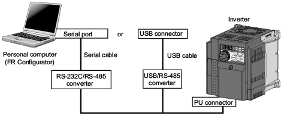

Konfigurator Perangkat Lunak Inverter-FREQROL FR Fitur


Dari memulai inverter hingga pemeliharaan, FR Configurator adalah perangkat lunak yang menawarkan lingkungan pengoperasian yang mudah.
Fitur
FR Configurator adalah perangkat lunak yang menawarkan lingkungan pengoperasian yang mudah. Dapat digunakan secara efektif mulai dari pengaturan inverter hingga perawatan.
Pengaturan parameter, pemantauan, dll. dapat dilakukan pada layar komputer pribadi Windows.
Komunikasi RS-485*1 tersedia untuk menghubungkan komputer pribadi ke inverter menggunakan konektor PU.

- *1Konverter RS-485 ke RS-232C atau USB ke RS-485 diperlukan secara terpisah.